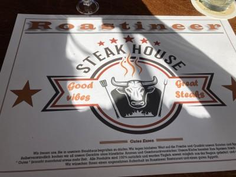
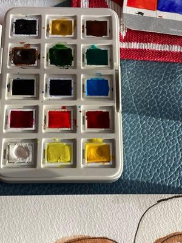

Seifenblasenspaß
Die Sonne scheint. Es ist Sonntag der 8. März. Und beim Spülen gibt es viel Spaß mit Seifenblasen. Wie es dazu kam und was es noch alles für #8sammeln der Miniblogparade von Susanne Wagner gab, kommt jetzt.
1.) Die Sonne scheint mir ins Gesicht als ich in der Küche die Rolladen hochziehe. Einen Moment halte ich inne und öffne die Terassentür.

Offene Terassentür mit sonnigem Garten
2.) Von draußen schallt ein vielstimmiges Vogelkonzert herein. Ich sehe Meisen, Spatzen, Amseln, Rotschwänzschen und Raben. Es liegt Frühling in der Luft.
3.) Als ich mich umdrehe sehe ich das dreckige Geschirr von gestern Abend. Es war spät und ich hatte keine Lust zum Spülen. Also muss ich jetzt ran. Aber wenigsten in Sonnenschein und mit Vogelgesangsbegleitung. Das warme Wasser läuft ins Becken. Die Spülmittelflasche sagt: „Quatsch, Primpft“ und gibt noch einige Tropfen frei. Okay, ich brauche noch ein wenig mehr. Flasche aufgedreht und Wasser reinlaufen lassen. Und dann passiert etwas wunderbares. Es entstehen große Seifenblasen, die in der Sonne schillern. Dann eine Kaskade kleiner Blasen die über den Rand quillen. Lächelnd experimentiere ich weiter mit dem Wasser und der Flasche. Langsamer laufen lassen, Flasche schräg. Immer neue Seifenblasen blubbern hervor. Toll wieviel Spülmittel doch noch in der Flasche ist. Ups, jetzt muss ich aufhören das Becken ist randvoll. Beschwingt starte ich den Abwasch der schnell von der Hand geht.

Spülbecken voller Schaum
4.) Bei dem herlichen Wetter entschließen wir uns zu einem Ausflug ins Umland zu einem Steakhouse welches wir noch nicht kennen. Wir werden herzlich von den holländischen Eigentümern entfangen. Der Dialekt sorgt direkt für Urlaubsfeeling. Das Fleich kommt von den Bauern aus der Gegend und wird über Holzkohle gegrillt. Mhmmm – super zart und aromatisch. Die Pommes unregelmäßig aus echten Kartoffeln mit Schale selbst gemacht. Dazu einen Rotebeetesalat - auch selbt gemacht. Der Abschluß ein selbstgebrannter Kirschlikör. Dann kommt noch der Besitzer auf einen Plausch vorbei. Rundrum ein gelungener Ausflug und ein Gaumenschmaus. Wir haben kaum geredet während dem Essen, so lecker wars. Also wenn mal jemand nach Dodenau bei Battenberg Eder (Hessen) vorbei kommt, dann kann ich für Fleichliebhaber das Roastineer wärmstens emphehlen.
{kind=link}

Platzdeckchen vom Restaurant Roastineer
5.) Zu Hause geht der Genuss weiter. Kaffetrinken mit selbstgebackenen Kuchen. Mein Lieblingsmensch hat ein Rezept rausgesucht und gestern haben wir gemeinsam gebacken: Zitronen Linzertorte. Jetzt sind wir gespannt auf das Ergebnis. Mandelteig mit Lemoncurdfüllung – nussig frisch – lecker.

Angebissenes Stück Lemoncurd Linzertorte
6.) Dann lockt die Sonne auf die Terasse. Eigentlich gibt es einiges im Haus zu tun, aber bei dem Wetter – viel zu schade. Jeder von uns schnappt sich ein Buch. Ich beginne die "Fungipedia". Spannend was es an Pilzen gibt und wie sie mit den Bäumen kommunizieren. Auf dem Platz nebenan bilden die spielenden Kinder und die Boulespieler eine begleitende Geräuschkulisse. Kurz traut sich auch die Fellnase raus.
7.) Ein Rundgang durch den Garten offenbart Schneeglöckchen, Knospen der Zierquitte und eine weiße Immmergrünblüte. Das muss ich einfach Fotografieren.

Schneeglöckchen im Gras
8.) Ich beschäftige mich mit dem Bild für meinen Beitrag bei der „Gefühlsduselei“ Ein Buch mit 100 Autoren mit je einer Geschichte zu 100 Gefühlen. Mir schwirrt seit ein paar Tagen eine neue Idee durch den Kopf. Jetzt hole ich die Aquarellfarben hervor und beginne. Ich liebe das Spiel mit Wasser und Farbe. Kontrolliert und Unkontrolliert. Mischen, übermalen, tupfen. Die Finger wie immer bunt. Konturen in Schwarz. Ich vergesse die Zeit bekomme nicht um mich herum mit. Mit dem Ergebnis bin ich zufrieden. Mal sehen wie es trocken ausschaut.
{kind=link}

Offener Auqarellkasten
Ein erfüllter, genußreicher, sinnesfreudiger 8. März. Gewärmt und voller Energie durch die Frühlingssonne. Gerne mehr davon.
Kommentare